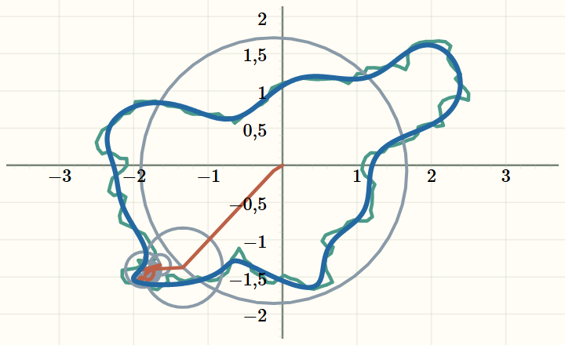
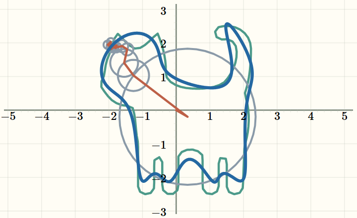
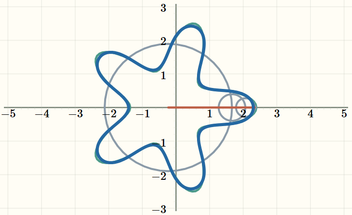

Batch B9: epicycles subject card, voronoi-degenerate, cross-ratio (G03, G04, G07)
1. projective-cross-ratio
Remove: no text and no line labels. The poster is byte-identical to before (the labels were already hidden); only the clip was re-encoded.
2. epicycles
No text. Subject card: Obris Slovenije at N = 10 (recipe: Primer select, Število členov N slider). Subjects compared below, all at N = 10 except the cat at N = 8 (cat at N = 10 failed the clip pixel check, 3.07x vs limit 3x).



3. voronoi-degenerate
Keep: direction arrows and symbols. The Trapez example is now chosen with the Primeri select (value trapezoid).